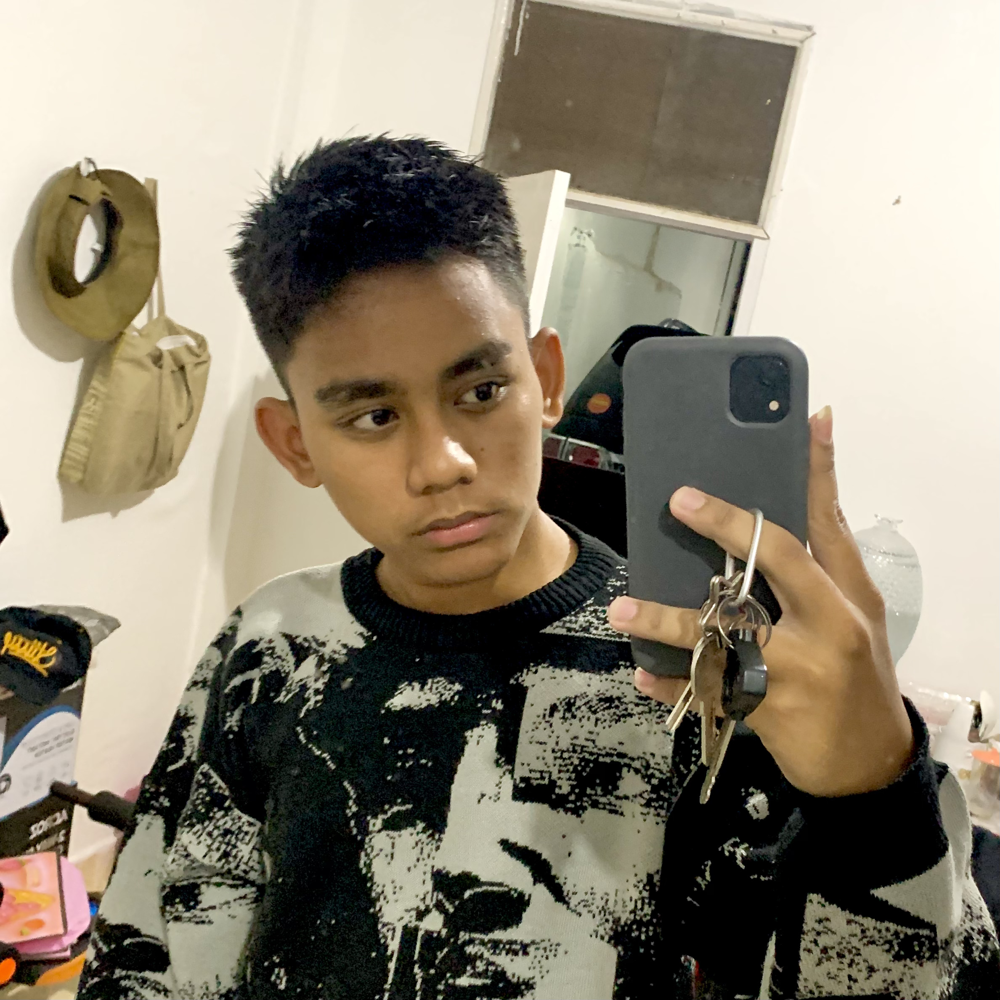

“Code the Web, Manage the Server”
Lagi asik banget ngulik dunia Web Development sama Server Administration.
Website ini semacam markas kecil gue, tempat lo bisa kepoin skill, project, dan cara reach out ke gue.
beeuh asyeeekk wokwok
Gue suka banget mainin VM, mulai dari bikin web simple sampe otak-atik server Debian biar jalan mulus di localhost, kadang juga mainin ke router dirumah (buat pamer ke mamah). Kadang sih error mulu 🤣 tapi dari situ justru belajar banyak. Mimpi gue? Jadi Fullstack dev and Operator yang jago banget ngurusin server, biar bisa coding sekaligus jaga db and backend tetap aman. Anjass keren banget cukk, reflek ssh gwe bejirr
Pencet ajalah males ngetik ulang
Beberapa hal yang sering gwe otak-atik
- Bahasa inggris sikit-sikit
- Web: HTML, CSS, PHP Basic
- Server: Debian, SSH, FTP, Samba, DNS (pokoknya anak server banget lah)
- Database: MySQL
- GitHub: buat simpen project biar keliatan keren ✨
- Networking: Mikrotik, Cisco Packet Tracer, Setting Adapter, Apache, phpMyAdmin, Wordpress, DHCP, DNS (biar client nggak nyasar 😅)
Ini beberapa project hasil keringat + kopi:
- RapDB → database mini pake PHP & MySQL, ada role admin/user
- Server Lab → eksperimen install & config Debian (SSH, FTP, Samba, DNS, dll)
- 30 Day Coding Challenge → program self-challenge biar konsisten belajar web dev
Project lain? Masih in progress, stay tuned bro 🚀
Mau collab? Atau sekadar ngobrolin tech/server/web?
Hit me up lewat:
GITHUB